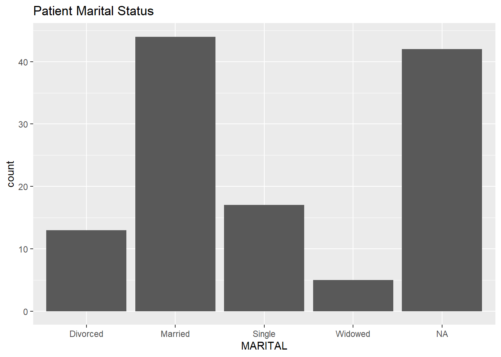
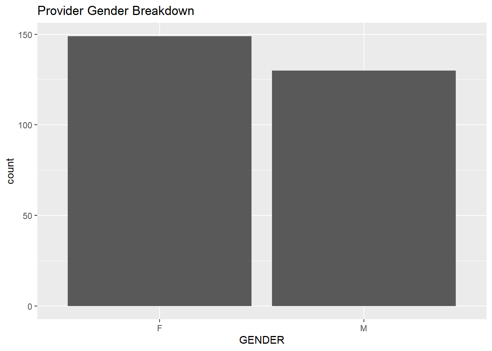
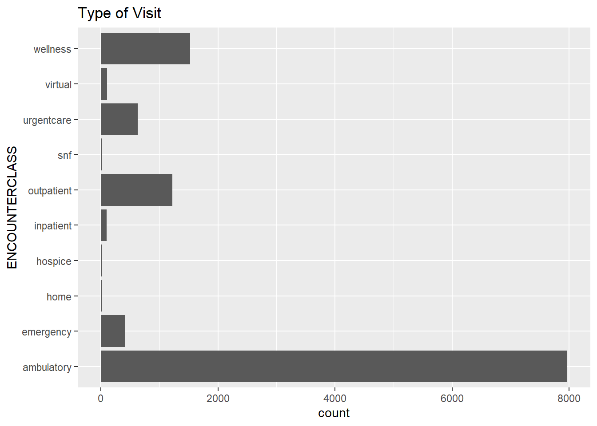
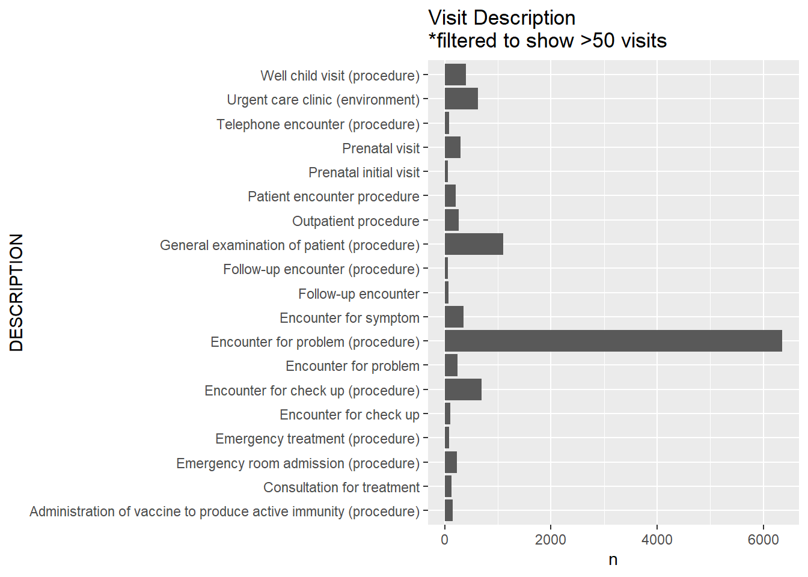
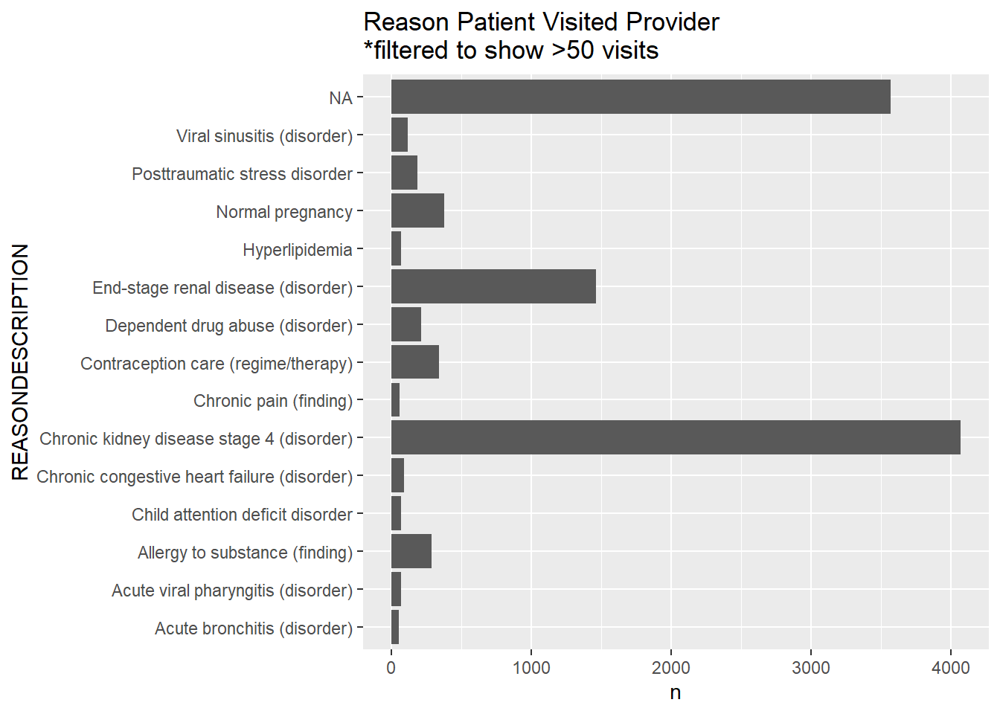
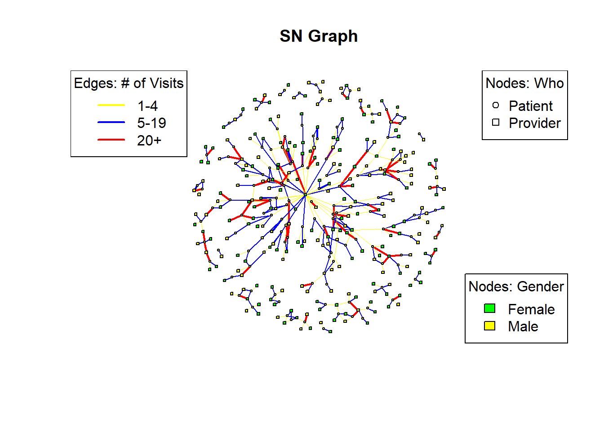

library(tidyverse)
library(readr)
library(igraph)
library(sna)
library(statnet)
library(ggplot2)
library(patchwork)Data for this project were taken from Synthetic Mass, which creates Synthetic patient data from Synthea.

While a whole host of datasets are available within each download, I will focus this project on three datasets: patients.csv, providers.csv, and encounters.csv.
Patients and Providers will be the actors analyzed. The patient and provider datasets contain information on the person level details, with names and some demographic information, with more detail available for patients than providers.
Encounters will be the relationships analyzed. Encounters are appointments, visits, and clinical encounters and include notes on the visit including the date, reason, and cost breakdown.
- Reminder: none of this data is real, it is synthetic, so the personally identifiable information I share is not data on real people and cannot be used to identify real people.
This post will primarily focus on data cleaning and data exploration with some exploration into social network analysis through transforming the data into an incidence matrix and plotting some attributes.
Read in Patient, Provider, and Encounter Data
PATIENT DATA
The following table is the data available in the patient dataset.
patients <- read_csv("synthea_sample_data_csv_latest/patients.csv")Rows: 121 Columns: 27
── Column specification ────────────────────────────────────────────────────────
Delimiter: ","
chr (19): Id, SSN, DRIVERS, PASSPORT, PREFIX, FIRST, LAST, SUFFIX, MAIDEN, ...
dbl (6): FIPS, LAT, LON, HEALTHCARE_EXPENSES, HEALTHCARE_COVERAGE, INCOME
date (2): BIRTHDATE, DEATHDATE
ℹ Use `spec()` to retrieve the full column specification for this data.
ℹ Specify the column types or set `show_col_types = FALSE` to quiet this message.head(patients)# A tibble: 6 × 27
Id BIRTHDATE DEATHDATE SSN DRIVERS PASSPORT PREFIX FIRST LAST SUFFIX
<chr> <date> <date> <chr> <chr> <chr> <chr> <chr> <chr> <chr>
1 b573d4… 1988-02-12 2004-12-30 999-… S99986… <NA> <NA> Avri… Olso… <NA>
2 270357… 1999-03-13 NA 999-… S99998… X640979… Ms. Norm… Lang… <NA>
3 35589a… 2003-02-05 NA 999-… S99996… X735788… Ms. Pegg… Eich… <NA>
4 d46186… 1986-11-07 NA 999-… S99939… X782935… Mrs. Ashl… Will… <NA>
5 983105… 1999-05-21 NA 999-… S99973… X519829… Ms. Chri… Anku… <NA>
6 54ac07… 1988-02-12 NA 999-… S99995… X507824… Mrs. Dion… O'Ko… <NA>
# ℹ 17 more variables: MAIDEN <chr>, MARITAL <chr>, RACE <chr>,
# ETHNICITY <chr>, GENDER <chr>, BIRTHPLACE <chr>, ADDRESS <chr>, CITY <chr>,
# STATE <chr>, COUNTY <chr>, FIPS <dbl>, ZIP <chr>, LAT <dbl>, LON <dbl>,
# HEALTHCARE_EXPENSES <dbl>, HEALTHCARE_COVERAGE <dbl>, INCOME <dbl>str(patients)spc_tbl_ [121 × 27] (S3: spec_tbl_df/tbl_df/tbl/data.frame)
$ Id : chr [1:121] "b573d409-cfaf-c585-a25b-e9d4cf510bd3" "2703570e-f634-d4cc-13db-2ae14e19ae59" "35589a76-2a97-0a89-8c2d-56defc8627af" "d46186a3-507c-0b22-1bfc-1f88bd7cbd7d" ...
$ BIRTHDATE : Date[1:121], format: "1988-02-12" "1999-03-13" ...
$ DEATHDATE : Date[1:121], format: "2004-12-30" NA ...
$ SSN : chr [1:121] "999-97-2089" "999-76-8207" "999-64-2625" "999-67-4853" ...
$ DRIVERS : chr [1:121] "S99986968" "S99998444" "S99996738" "S99939817" ...
$ PASSPORT : chr [1:121] NA "X64097979X" "X7357887X" "X78293510X" ...
$ PREFIX : chr [1:121] NA "Ms." "Ms." "Mrs." ...
$ FIRST : chr [1:121] "Avril120" "Norma469" "Peggie783" "Ashlie138" ...
$ LAST : chr [1:121] "Olson653" "Langosh790" "Eichmann909" "Williamson769" ...
$ SUFFIX : chr [1:121] NA NA NA NA ...
$ MAIDEN : chr [1:121] NA NA NA "Cummerata161" ...
$ MARITAL : chr [1:121] NA NA NA "M" ...
$ RACE : chr [1:121] "white" "white" "white" "white" ...
$ ETHNICITY : chr [1:121] "nonhispanic" "nonhispanic" "nonhispanic" "nonhispanic" ...
$ GENDER : chr [1:121] "F" "F" "F" "F" ...
$ BIRTHPLACE : chr [1:121] "Quincy Massachusetts US" "Somerville Massachusetts US" "Pittsfield Massachusetts US" "Salem Massachusetts US" ...
$ ADDRESS : chr [1:121] "590 Kuhic Frontage road" "525 Gleason Burg Suite 75" "230 Ratke Neck Suite 55" "355 Eichmann Underpass" ...
$ CITY : chr [1:121] "Newton" "Bridgewater" "Walpole" "Lexington" ...
$ STATE : chr [1:121] "Massachusetts" "Massachusetts" "Massachusetts" "Massachusetts" ...
$ COUNTY : chr [1:121] "Middlesex County" "Plymouth County" "Norfolk County" "Middlesex County" ...
$ FIPS : num [1:121] 25017 25023 25021 25017 25017 ...
$ ZIP : chr [1:121] "02461" "02324" "02081" "02421" ...
$ LAT : num [1:121] 42.4 42 42.1 42.4 42.3 ...
$ LON : num [1:121] -71.2 -71 -71.2 -71.2 -71.5 ...
$ HEALTHCARE_EXPENSES: num [1:121] 31150 50725 65580 162538 141345 ...
$ HEALTHCARE_COVERAGE: num [1:121] 129135 100008 32578 809077 282706 ...
$ INCOME : num [1:121] 482269 190464 78997 6472 141475 ...
- attr(*, "spec")=
.. cols(
.. Id = col_character(),
.. BIRTHDATE = col_date(format = ""),
.. DEATHDATE = col_date(format = ""),
.. SSN = col_character(),
.. DRIVERS = col_character(),
.. PASSPORT = col_character(),
.. PREFIX = col_character(),
.. FIRST = col_character(),
.. LAST = col_character(),
.. SUFFIX = col_character(),
.. MAIDEN = col_character(),
.. MARITAL = col_character(),
.. RACE = col_character(),
.. ETHNICITY = col_character(),
.. GENDER = col_character(),
.. BIRTHPLACE = col_character(),
.. ADDRESS = col_character(),
.. CITY = col_character(),
.. STATE = col_character(),
.. COUNTY = col_character(),
.. FIPS = col_double(),
.. ZIP = col_character(),
.. LAT = col_double(),
.. LON = col_double(),
.. HEALTHCARE_EXPENSES = col_double(),
.. HEALTHCARE_COVERAGE = col_double(),
.. INCOME = col_double()
.. )
- attr(*, "problems")=<externalptr> summary(patients) Id BIRTHDATE DEATHDATE
Length:121 Min. :1915-06-30 Min. :1974-12-14
Class :character 1st Qu.:1959-04-12 1st Qu.:2004-04-13
Mode :character Median :1983-05-26 Median :2010-05-15
Mean :1979-08-14 Mean :2008-12-31
3rd Qu.:1999-09-28 3rd Qu.:2019-12-16
Max. :2022-08-22 Max. :2023-10-05
NA's :100
SSN DRIVERS PASSPORT PREFIX
Length:121 Length:121 Length:121 Length:121
Class :character Class :character Class :character Class :character
Mode :character Mode :character Mode :character Mode :character
FIRST LAST SUFFIX MAIDEN
Length:121 Length:121 Length:121 Length:121
Class :character Class :character Class :character Class :character
Mode :character Mode :character Mode :character Mode :character
MARITAL RACE ETHNICITY GENDER
Length:121 Length:121 Length:121 Length:121
Class :character Class :character Class :character Class :character
Mode :character Mode :character Mode :character Mode :character
BIRTHPLACE ADDRESS CITY STATE
Length:121 Length:121 Length:121 Length:121
Class :character Class :character Class :character Class :character
Mode :character Mode :character Mode :character Mode :character
COUNTY FIPS ZIP LAT
Length:121 Min. :25001 Length:121 Min. :41.56
Class :character 1st Qu.:25014 Class :character 1st Qu.:42.15
Mode :character Median :25017 Mode :character Median :42.28
Mean :25018 Mean :42.24
3rd Qu.:25025 3rd Qu.:42.40
Max. :25027 Max. :42.77
NA's :19
LON HEALTHCARE_EXPENSES HEALTHCARE_COVERAGE INCOME
Min. :-73.26 Min. : 500 Min. : 0 Min. : 3365
1st Qu.:-71.51 1st Qu.: 21279 1st Qu.: 23029 1st Qu.: 32577
Median :-71.13 Median : 65580 Median : 165466 Median : 71082
Mean :-71.27 Mean : 166163 Mean : 409297 Mean :134519
3rd Qu.:-71.01 3rd Qu.: 221068 3rd Qu.: 679128 3rd Qu.:135462
Max. :-70.12 Max. :1547205 Max. :1955909 Max. :931642
#create NAME column combining FIRST and LAST names
patients <- patients %>%
rename(PATIENT = Id) %>%
unite(NAME, FIRST, LAST, sep = " ")
#trim whitespace NAME
patients$NAME <- trimws(patients$NAME)
#trim whitespace COUNTY
patients$CITY <- trimws(patients$CITY)
#clean up GENDER, RACE, ETHNICITY, and INCOME sections
patients <- patients %>%
mutate(
GENDER = tolower(GENDER),
GENDER = case_when(
GENDER %in% c("male", "m", "man") ~ "Male",
GENDER %in% c("female", "f", "woman") ~ "Female",
TRUE ~ NA_character_ # assign NA to any non-standard values
),
# race (patient)
RACE = tolower(RACE), # convert race to lower case for consistency
# ethnicity (patient)
ETHNICITY = tolower(ETHNICITY), # convert ethnicity to lower case for consistency
# marital (patient)
MARITAL = ifelse(MARITAL == "M", "Married",
ifelse(MARITAL == "D", "Divorced",
ifelse(MARITAL == "W", "Widowed",
ifelse(MARITAL == "S", "Single", MARITAL)))),
# income (patient)
INCOME = as.numeric(INCOME) # convert income to numeric if necessary
) %>%
drop_na(GENDER, RACE) I am only keeping the demographic data below (gender, race, marital status, income, and age) which will be used as an attribute for each patient.
#Create AGE from BIRTHDATE
patients <- patients %>%
mutate(
BIRTHDATE = as.Date(BIRTHDATE), # Ensure 'dob' is in Date format
AGE = interval(BIRTHDATE, today()) / years(1) # Calculate age in years
) %>%
mutate(
AGE = floor(AGE) # complete years only, removing decimal
)
# Only keep patient name and demographics. This will be utilized as the attribute data for analysis.
pat_attr <- patients%>%
select(NAME, GENDER, RACE, MARITAL, CITY, INCOME, AGE)
head(pat_attr)# A tibble: 6 × 7
NAME GENDER RACE MARITAL CITY INCOME AGE
<chr> <chr> <chr> <chr> <chr> <dbl> <dbl>
1 Avril120 Olson653 Female white <NA> Newton 482269 36
2 Norma469 Langosh790 Female white <NA> Bridgewater 190464 25
3 Peggie783 Eichmann909 Female white <NA> Walpole 78997 21
4 Ashlie138 Williamson769 Female white Married Lexington 6472 37
5 Christiane220 Ankunding277 Female white <NA> Hopkinton 141475 24
6 Dione665 O'Kon634 Female white Married Newton 482269 36pat_race <- ggplot(pat_attr,aes(RACE)) + geom_bar()
pat_gender <- ggplot(pat_attr,aes(GENDER)) + geom_bar()
pat_race + pat_gender + plot_annotation(title = "Patient Race and Gender Breakdown")ggplot(pat_attr,aes(MARITAL)) + geom_bar() + labs(title = "Patient Marital Status")
pat_income <- ggplot(pat_attr, aes(x = 1, y = INCOME)) +
geom_jitter(width = 0.2) +
labs(x = NULL, y = "Income") +
theme_minimal() + labs(title = "Patient Income")
summary(pat_attr$INCOME) Min. 1st Qu. Median Mean 3rd Qu. Max.
3365 32577 71082 134519 135462 931642 pat_age <- ggplot(pat_attr,aes(AGE)) + geom_bar()PROVIDER DATA
The following table is the data available in the provider dataset.
providers <- read_csv("synthea_sample_data_csv_latest/providers.csv") %>%
rename(PROVIDER = Id)Rows: 279 Columns: 13
── Column specification ────────────────────────────────────────────────────────
Delimiter: ","
chr (9): Id, ORGANIZATION, NAME, GENDER, SPECIALITY, ADDRESS, CITY, STATE, ZIP
dbl (4): LAT, LON, ENCOUNTERS, PROCEDURES
ℹ Use `spec()` to retrieve the full column specification for this data.
ℹ Specify the column types or set `show_col_types = FALSE` to quiet this message.head(providers)# A tibble: 6 × 13
PROVIDER ORGANIZATION NAME GENDER SPECIALITY ADDRESS CITY STATE ZIP LAT
<chr> <chr> <chr> <chr> <chr> <chr> <chr> <chr> <chr> <dbl>
1 586477e1… 74ab949d-17… Ted9… M GENERAL P… 881 Ma… Fitc… MA 01420 42.6
2 4b284e0c… e09d4c49-c2… Barb… F GENERAL P… 60 HOS… LEOM… MA 0145… 42.5
3 88668b3f… e76b5eb0-0c… Gise… F GENERAL P… 1400 V… West… MA 02132 42.3
4 21a7f0e9… 77645e49-3f… Vell… F GENERAL P… 363 HI… FALL… MA 0272… 41.7
5 49671606… aa682136-a4… Prec… F GENERAL P… 501 CO… NORW… MA 0206… 42.2
6 bcc6badc… d2284f74-b6… Fern… F GENERAL P… 331 E … E FA… MA 0253… 41.6
# ℹ 3 more variables: LON <dbl>, ENCOUNTERS <dbl>, PROCEDURES <dbl>I am only keeping the demographic data below (gender) which will be used as an attribute for each provider.
#trim whitespace NAME
providers$NAME <- trimws(providers$NAME)ggplot(providers, aes(GENDER)) +geom_bar() + labs(title = "Provider Gender Breakdown")
ENCOUNTER DATA
encounters <- read_csv("synthea_sample_data_csv_latest/encounters.csv")Rows: 11987 Columns: 15
── Column specification ────────────────────────────────────────────────────────
Delimiter: ","
chr (8): Id, PATIENT, ORGANIZATION, PROVIDER, PAYER, ENCOUNTERCLASS, DESCRI...
dbl (5): CODE, BASE_ENCOUNTER_COST, TOTAL_CLAIM_COST, PAYER_COVERAGE, REASO...
dttm (2): START, STOP
ℹ Use `spec()` to retrieve the full column specification for this data.
ℹ Specify the column types or set `show_col_types = FALSE` to quiet this message.head(encounters)# A tibble: 6 × 15
Id START STOP PATIENT ORGANIZATION PROVIDER
<chr> <dttm> <dttm> <chr> <chr> <chr>
1 4afc6ab… 2013-11-02 00:34:37 2013-11-02 00:49:37 270357… 51370692-62… c0cc76b…
2 c502ee2… 2014-11-01 12:48:31 2014-11-01 13:03:31 35589a… 57e4e5fa-d6… 896d5c7…
3 6f3ad10… 1995-02-03 08:38:10 1995-02-03 08:53:10 b573d4… 67d2f85b-dd… 4087a49…
4 0d9b475… 2015-02-25 16:48:31 2015-02-25 17:17:55 35589a… ca62a361-9c… 370ff56…
5 ec0d6c6… 2013-11-09 00:34:37 2013-11-09 00:49:37 270357… 51370692-62… c0cc76b…
6 ec41ff9… 2014-03-16 11:34:37 2014-03-16 11:49:37 270357… 51370692-62… c0cc76b…
# ℹ 9 more variables: PAYER <chr>, ENCOUNTERCLASS <chr>, CODE <dbl>,
# DESCRIPTION <chr>, BASE_ENCOUNTER_COST <dbl>, TOTAL_CLAIM_COST <dbl>,
# PAYER_COVERAGE <dbl>, REASONCODE <dbl>, REASONDESCRIPTION <chr>ggplot(encounters, aes(ENCOUNTERCLASS)) + geom_bar() + coord_flip()+ labs(title = "Type of Visit")
ggplot(data = encounters %>%
count(DESCRIPTION) %>%
filter(n > 50), # Filter for counts higher than 10
aes(x = DESCRIPTION, y = n)) +
geom_bar(stat = "identity") +
coord_flip() + labs(title = paste("Visit Description", "\n*filtered to show >50 visits"))
ggplot(data = encounters %>%
count(REASONDESCRIPTION) %>%
filter(n > 50), # Filter for counts higher than 10
aes(x = REASONDESCRIPTION, y = n)) +
geom_bar(stat = "identity") +
coord_flip() + labs(title = paste("Reason Patient Visited Provider", "\n*filtered to show >50 visits"))
I am noticing a lot of kidney related diseases in this dataset
Combine Patient, Provider, and Encounter Data
I am taking this step here so that I have a master dataset (encounters_attributes) and so that I can create an edgelist more easily.
# Perform a left join to merge encounters with provider_attributes based on PROVIDER
encounters_cleaning <- left_join(encounters, providers, by = "PROVIDER")
# Replace the PROVIDER column with the corresponding names from the NAME column
encounters_cleaning$PROVIDER <- encounters_cleaning$NAME
# Remove the NAME column if no longer needed
encounters_cleaning <- encounters_cleaning %>%
select(-NAME)
#Repeat for Provider
encounters_cleaning <- left_join(encounters_cleaning, patients, by = "PATIENT")
encounters_cleaning$PATIENT <- encounters_cleaning$NAME
encounters_cleaning <- encounters_cleaning %>%
select(-NAME)
#Clearly identify the Encounter ID
encounters_cleaning <- encounters_cleaning %>%
rename(ENCOUNTER_ID = Id)check dimensions of Providers…
In later analysis I noticed that while there are 279 providers in the provider.csv, there are only 253 providers listed in the encounters df. I need to find out who is in the encounters list and only keep them for analysis
check_prov <- encounters_cleaning %>%
group_by(PROVIDER, ORGANIZATION.x) %>%
summarize(COUNT = n())`summarise()` has grouped output by 'PROVIDER'. You can override using the
`.groups` argument.check_prov2 <- providers %>%
group_by(NAME, PROVIDER)dim(check_prov)[1] 253 3dim(check_prov2)[1] 279 13# Perform semi-join to keep providers present in both datasets
providers_only_in_providers_df <- check_prov2 %>%
anti_join(check_prov, by = c("NAME" = "PROVIDER"))
# Print the dimensions of the filtered dataset
print(dim(providers_only_in_providers_df))[1] 26 13print(providers_only_in_providers_df)# A tibble: 26 × 13
# Groups: NAME, PROVIDER [26]
PROVIDER ORGANIZATION NAME GENDER SPECIALITY ADDRESS CITY STATE ZIP LAT
<chr> <chr> <chr> <chr> <chr> <chr> <chr> <chr> <chr> <dbl>
1 c96d72f… 05bcaa3e-aa… Bok9… F GENERAL P… 1 LOVE… SOUT… MA 0266… 41.7
2 3527717… 8e3ca57f-6f… Conc… F GENERAL P… 89 MOR… ANDO… MA 0181… 42.7
3 8307628… 02c936e2-3a… Royc… F GENERAL P… 120 FI… BOST… MA 0212… 42.3
4 31b33e0… 7a3b8310-02… Leif… M GENERAL P… 6 HATF… NORT… MA 0106… 42.3
5 97c7e69… 68ea50ba-27… Alan… M GENERAL P… 25 ARM… WEST… MA 0246… 42.4
6 3d3b1f7… 65f0254a-73… Carl… F GENERAL P… 720 BO… MARL… MA 0175… 42.4
7 e0755f5… 27bf2e46-74… Kath… F GENERAL P… 80 BOS… NORT… MA 0186… 42.6
8 03c9650… 200746fc-5d… Latr… F GENERAL P… 800 CU… WOBU… MA 0180… 42.5
9 b622a6a… 9b1f8cd0-22… Clau… M GENERAL P… 800 ES… LAWR… MA 0184… 42.7
10 bedab72… a609d72c-6c… Mega… F GENERAL P… 1000 N… PITT… MA 0120… 42.5
# ℹ 16 more rows
# ℹ 3 more variables: LON <dbl>, ENCOUNTERS <dbl>, PROCEDURES <dbl># Perform anti-join to remove providers only present in check_prov2 from the original dataset
providers_filtered <- providers %>%
anti_join(providers_only_in_providers_df, by = c("NAME" = "NAME"))
# Print the dimensions of the resulting dataset
print(dim(providers_filtered))[1] 253 13check_pat <- encounters_cleaning %>%
group_by(PATIENT, GENDER.y) %>%
summarize(COUNT = n())`summarise()` has grouped output by 'PATIENT'. You can override using the
`.groups` argument.check_pat2 <- patients %>%
group_by(NAME,PATIENT)dim(check_pat)[1] 121 3dim(check_pat2)[1] 121 27# Perform a left join to merge encounters with provider_attributes based on PROVIDER
encounters_cleaned <- left_join(encounters, providers_filtered, by = "PROVIDER")
# Replace the PROVIDER column with the corresponding names from the NAME column
encounters_cleaned$PROVIDER <- encounters_cleaned$NAME
# Remove the NAME column if no longer needed
encounters_cleaned <- encounters_cleaned %>%
select(-NAME)
#Repeat for Provider
encounters_cleaned <- left_join(encounters_cleaned, patients, by = "PATIENT")
encounters_cleaned$PATIENT <- encounters_cleaned$NAME
encounters_cleaned <- encounters_cleaned %>%
select(-NAME)
#Clearly identify the Encounter ID
encounters_cleaned <- encounters_cleaned %>%
rename(ENCOUNTER_ID = Id)encounter_attributes <- encounters_cleaned %>%
select(ENCOUNTER_ID, PATIENT, PROVIDER, GENDER.x, GENDER.y, RACE, MARITAL, ETHNICITY, INCOME, CITY.x, CITY.y)
# View the updated dataframe
head(encounter_attributes)# A tibble: 6 × 11
ENCOUNTER_ID PATIENT PROVIDER GENDER.x GENDER.y RACE MARITAL ETHNICITY INCOME
<chr> <chr> <chr> <chr> <chr> <chr> <chr> <chr> <dbl>
1 4afc6abc-ab… Norma4… Jeromy1… M Female white <NA> nonhispa… 190464
2 c502ee2d-1d… Peggie… Abdul21… M Female white <NA> nonhispa… 78997
3 6f3ad103-a2… Avril1… Marshal… M Female white <NA> nonhispa… 482269
4 0d9b475b-5e… Peggie… Benedic… M Female white <NA> nonhispa… 78997
5 ec0d6c63-84… Norma4… Jeromy1… M Female white <NA> nonhispa… 190464
6 ec41ff94-ed… Norma4… Jeromy1… M Female white <NA> nonhispa… 190464
# ℹ 2 more variables: CITY.x <chr>, CITY.y <chr>EDGELIST
# Create Edgelist
encounters_el <- encounter_attributes %>%
group_by(PATIENT, PROVIDER) %>%
summarize(COUNT = n()) `summarise()` has grouped output by 'PATIENT'. You can override using the
`.groups` argument.head(encounters_el)# A tibble: 6 × 3
# Groups: PATIENT [2]
PATIENT PROVIDER COUNT
<chr> <chr> <int>
1 Akiko835 Larkin917 Emilio417 Barton704 18
2 Akiko835 Larkin917 Frederic454 Larkin917 7
3 Akiko835 Larkin917 Jim478 Goyette777 2
4 Akiko835 Larkin917 Kirby843 McKenzie376 19
5 Akiko835 Larkin917 Ted955 Reilly981 1
6 Anneliese170 Berge125 Althea11 Ankunding277 6dim(encounters_el)[1] 437 3COMBINED ATTRIBUTE LIST
#combine pro and pat attr
pat_attr$type <- "PATIENT"
pro_attr <- providers_filtered %>%
select(NAME, GENDER, CITY)
pro_attr$type <- "PROVIDER"
both_attr <- bind_rows(pat_attr, pro_attr)
head(both_attr)# A tibble: 6 × 8
NAME GENDER RACE MARITAL CITY INCOME AGE type
<chr> <chr> <chr> <chr> <chr> <dbl> <dbl> <chr>
1 Avril120 Olson653 Female white <NA> Newton 482269 36 PATI…
2 Norma469 Langosh790 Female white <NA> Bridgewater 190464 25 PATI…
3 Peggie783 Eichmann909 Female white <NA> Walpole 78997 21 PATI…
4 Ashlie138 Williamson769 Female white Married Lexington 6472 37 PATI…
5 Christiane220 Ankunding277 Female white <NA> Hopkinton 141475 24 PATI…
6 Dione665 O'Kon634 Female white Married Newton 482269 36 PATI…#create combined attribute list
attribute_list <- do.call(list, both_attr)NETWORK
# create bipartite network with attributes
encounters.st.3 <- network(encounters_el,
directed = FALSE,
bipartite = TRUE,
matrix.type = "edgelist",
vertex.attr = attribute_list)
encounters.st.3 Network attributes:
vertices = 374
directed = FALSE
hyper = FALSE
loops = FALSE
multiple = FALSE
bipartite = 121
total edges= 437
missing edges= 0
non-missing edges= 437
Vertex attribute names:
AGE CITY GENDER INCOME MARITAL NAME RACE type vertex.names
Edge attribute names:
COUNT Graph Section
incidence_graph <- graph_from_biadjacency_matrix(encounters.st.3)# Create a graph from the edgelist
g <- graph_from_data_frame(encounters_el,
directed = FALSE)
map_g <- bipartite_mapping(g)
head(map_g$res)[1] TRUEhead(map_g$type) Akiko835 Larkin917 Anneliese170 Berge125 Annice210 McClure239
FALSE FALSE FALSE
Anthony633 Renner328 Arleen939 Kling921 Ashlie138 Williamson769
FALSE FALSE FALSE # Assign overall Graph Color Scheme for Consistency
# Assign vertex attributes
V(g)$type <- c(rep("PATIENT", n_distinct(encounters_el$PATIENT)),
rep("PROVIDER", n_distinct(encounters_el$PROVIDER)))
vertex_colors <- ifelse(attribute_list$GENDER == "F", "green", "yellow")
vertex_shape <- ifelse(V(g)$type == "PATIENT", "circle", "square")
# Find the range of counts in the graph
count_range <- range(E(g)$COUNT)
# Define the edge widths based on the counts
edge_widths <- ifelse(E(g)$COUNT < 5, 1,
ifelse(E(g)$COUNT < 20, 50,
3 * (E(g)$COUNT - count_range[1]) / (count_range[2] - count_range[1])))
edge_widths <- edge_widths *300
edge_widths <- ifelse(E(g)$COUNT < 5, 0.5, ifelse(E(g)$COUNT < 20, 1, 2))
edge_colors <- ifelse(E(g)$COUNT < 5, "yellow",
ifelse(E(g)$COUNT <= 20, "blue", "red"))plot(g,
layout = layout.fruchterman.reingold,
vertex.label.dist = 2,
vertex.size = 2,
vertex.color = vertex_colors,
vertex.shape = vertex_shape,
edge.label = NA,
vertex.label = NA,
vertex.label.cex = 0.2,
edge.width = edge_widths,
edge.color = edge_colors,
main = "SN Graph")
# Define legend for vertex colors
legend("bottomright",
legend = c("Female", "Male"), # You can customize these labels
fill = c("green", "yellow"), # Fill colors corresponding to vertex colors
title = "Nodes: Gender") # Legend title
# Define legend for vertex shapes
legend("topright",
legend = c("Patient", "Provider"), # You can customize these labels
pch = c(1, 0), # Point shapes corresponding to vertex shapes
title = "Nodes: Who") # Legend title
# Define legend for edge colors
legend("topleft",
legend = c("1-4", "5-19", "20+"), # You can customize these labels
col = c("yellow", "blue", "red"), # Line colors corresponding to edge colors
lwd = 2, # Line width
title = "Edges: # of Visits") # Legend title
This graph shows a myriad of patient, provider relationships. One provider seems to be at the center of the graph, having the most edges reaching out to different patients. This central provider sees many patients only 1-4 times (indicated in yellow).
We see many providers close to the center that also have blue and red edges, indicating that they see 5-19 patients (blue) or more than 20 patients (red).
There are also many patients and providers that are not linked into the larger group, with pairings of one patient and one provider, one patient and two providers, one patient and three providers, two patients and three providers, two patients and four providers, and so on.
My next steps will include looking more deeply at these relationships through blocking, filtering, and density analysis.
Use to write CSV
#write csv
write.csv(pat_attr, “pat_attr.csv”)
write.csv(pro_attr, “pro_attr.csv”)
write.csv(encounters_cleaning, “encounters_cleaning.csv”)
write.csv(encounters_cleaned, “encounters_cleaned.csv”)
write.csv(encounter_attributes, “encounter_attributes.csv”)
write.csv(attribute_list, “attribute_list.csv”)
write.csv(encounters_el, “encounters_el.csv”)
write.csv(encounters.st.3, “encounters.st.3.csv”)